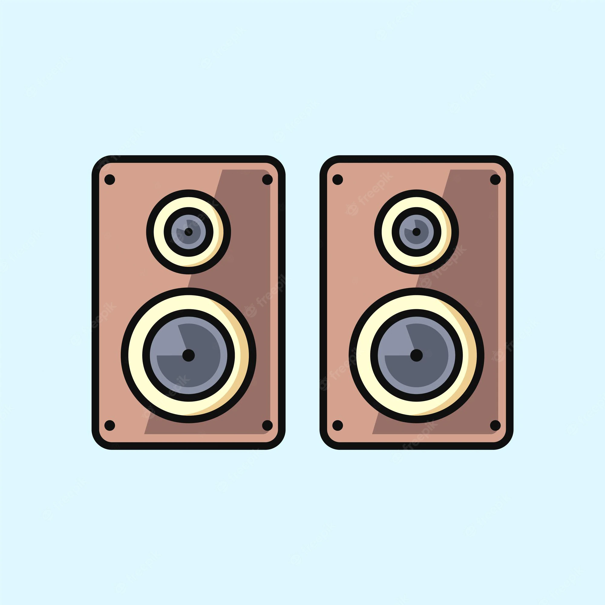
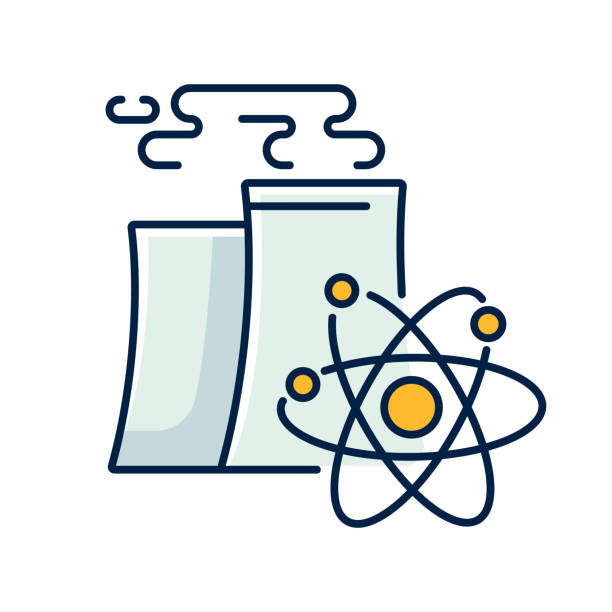

My Passions.

Programming & Design
I first became introduced to programming and web design when I was about 16. I used HTML and CSS, along with an early version of Bootstrap. I had no idea what I was doing, but after a couple weeks I had a personal website. Now, over a decade later, I still have no idea what I'm doing. Except now I use Python and HTML5.
Listening to Music
From Louis Armstrong's "La Vie En Rose" to Pink Floyd's "Wish You Were Here", I love listening to music. I have my headphones on constantly. If I'm working or working out, music gets me in the mood and keeps me focused. If I'm vibing, music cushions my mind and helps me just breathe.


Nuclear Power
There are many environmentally friendly altenatives to fossil fuel based energy production, but none of them have the potential of Nuclear power. Fusion may still be a dream, but recent breakthroughs (Ignition!) have made this dream more tangible goal and less fantastical delusion. Even fission, the dirty, unpopular brother of fusion is a tremendous option for producing clean energy.